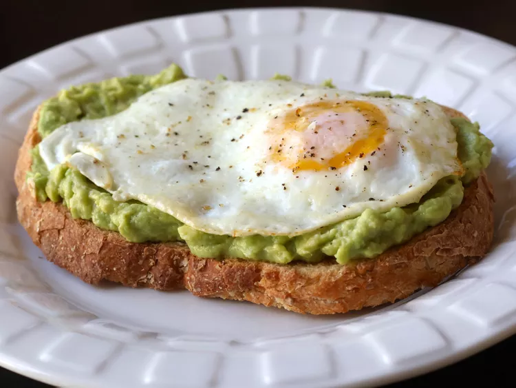

Melt butter in a skillet over medium-low heat. Crack eggs into the skillet side by side and cook untileggsare white on the bottom layer and firm enough to flip, 2 to 3 minutes. Flipeggs trying not to crack the yolk, and cook until egg reaches desired doneness, 2 to 5 minutes more.
Meanwhile, toast bread slices to desired doneness, 3 ot 5 minutes.
Mash avocado in a bowl; stir in lemon juice, cayenne pepper, and sea salt. Spread avocado mixture onto toast. Top with fried egg and season with sea salt and pepper.